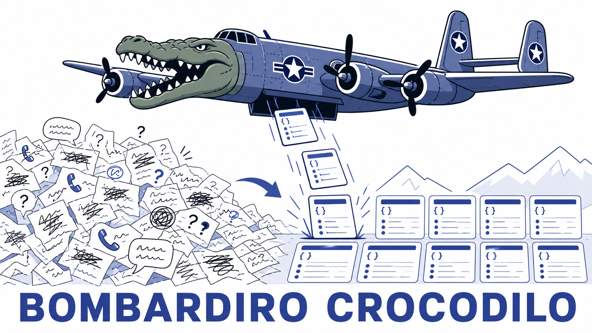

Stage 2: intake

Stage 1 handed you claims already in JSON. From stage 2 onwards, contacts arrive as human-generated text, so somebody has to read the sentence and turn it into something understandable. That somebody is intake, a stateless model call that takes one transcript in and produces one report out. It has no memory between contacts and no access to your stores.
For now, each incident is reported only once. In Stage 3, you’ll start reconciling duplicates.

What needs to be built
extract_report in intake.py is ready. It picks the model, sends the system prompt with the contact text, and budgets the completion. Smaller models occasionally struggle with structured output, so _parse helps with that. You need to:
prompts/intake_system.md- five TODO sections: output structure,incident_type, severity, headcount, and event time with confidence. This governs how the model turns text into a structure._finalize(fields, contact)inintake.py- TheTODO (stage 2)at the end ofextract_reportneeds to check and validate the model output. Flip that line toreturn _finalize(fields, contact), usage.
As you build the prompt, you’ll need to grade it against the fixtures your team developed on day 1.
Envelope authority
_finalize is where the report structure is enforced. You can design your own report schema, but maintain these four invariants:
contact_idandreported_locationare copied from the contact object, never taken from the model. Never give an LLM the opportunity to invent something when you can just copy the ground truth.incident_typeis exactly one offire,none,unknown. Anything else coerces tounknown.notesis""when absent.- A
nonereport carries no fire severity and no headcount: force both to null.
Everything else - severity, headcount and its qualifier, event time, and how confident your intake bot is in each field - comes from the model.
The model is small
INTAKE_MODEL defaults to mimo-v2.5. It follows explicit rules well and guesses unstated ones badly, so a clearly-stated decision ladder beats a pile of few-shot examples: say what you mean rather than hoping it infers the convention. If you have the examples and want to build the ladder, use Opus to do that; it is a much more powerful model and excels at such tasks.
MAX_TOKENS is 1400 and that is deliberate. If you enable reasoning (or swap to a reasoning model later), it needs enough token output to complete its reasoning trace before it ever emits the JSON. A tight budget truncates the response to empty content and your accuracy collapses to zero.
Activity: Extract the claim
Spoiler: stuck on Stage 2?
-
Write the prompt. Fill the five sections of
prompts/intake_system.md.incident_typeis the one that moves the score: explicit flame or fire words arefire; an explicit denial or a clearly non-fire request isnone; smoke, a smell, an alarm, or plain ambiguity isunknown. Absence of the word “fire” is not a denial. -
Implement
_finalizeto the envelope-authority rules above, then flip theTODO (stage 2)line so raw model output stops escaping unvalidated. -
Keep the free paths free. Typed truck observations and Stage 1 structured claims must not reach the model -
extract_reportalready routesstructured_reportto_project_claimat zero tokens, andrunner._process_tickalready splits truck observations out before intake sees them. Neither should cost you a model call. -
Grade it against the fixtures in your repository - the accepted labels Day 1’s evaluation session produced over
datasets/contacts_unlabeled.jsonl, which the driver’s pull request merged into every teammate’s repo. Score against the claim the caller expressed, never against hidden simulator truth. Give severity, headcount, and event time a tolerance band, because the model is reading prose and a defensible reading can differ from your labeller’s. Treat per-fieldconfidenceas advisory and directional rather than a number to match: it carries generation jitter and is not worth chasing. The instructor’s own labeled corpus is a different, unseen set of contacts and stays sealed until model comparison, where you unseal it as a held-out test set - so do not tune against it, because you cannot. -
Add the scenarios.
features/intake.featureships only INT-2 and INT-3, both on the structured path. Addhuman_textscenarios of your own for the cases you just argued about in the prompt - a denial, ambiguous smoke, a red herring, a caller who hedges - and record the new baseline. -
Run it live. Point the runner at a stage-2 scenario, where every contact is a panicked sentence rather than a structured claim:
uv run hadr-runner stage2-language@londoneYour Stage 1 dispatcher is unchanged, so any drop against Stage 1 is intake losing information the dispatcher used to get for free.
Boundaries
- Intake has no incident-store access and no memory across contacts.
- Ambiguous smoke is
unknown, not a confirmed fire or an explicit false alarm. - A clearly non-fire red herring such as a cat rescue or a neighbour dispute is
none, notunknown. - Every human contact supplies exact coordinates or an exact
l...building ID. It may still be wrong relative to the real fire. The runner converts buildings to locations for you. The intake helper-prompt stub still asks you to say why, not to pick freely. - Do not add duplicate reconciliation yet.
When you’re done
- Open a pull request with the prompt and
_finalize, and have a teammate review the prompt as prose, not as code. It is the part of your system a reviewer can actually read end to end, and a rule that is ambiguous to your teammate is ambiguous tomimo-v2.5. - Post your extraction accuracy on the Padlet: the per-field breakdown, not one aggregate number, plus tokens per contact. Your team graded against the same fixtures, so the field where your numbers diverge is the field where your prompts disagree - and one of you is wrong. a. If you spot your accuracy as unusually high, ask yourself if that is because your intake bot is good, or because your fixtures are missing details, and too easy to predict.